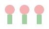

Üdvözöl a Tudatos szülők oldal!
Pszichoedukáció, hogy magabiztosabb szülő lehess.
Bemutatkozás
Röviden bemutatkozunk, és elmondjuk, miért fontos a tudatosság a szülői szerepben.

Az alkalom menete
- Fejlődéslélektani alapok
- Tévhitek vs. tények
- Gyakorlati tanácsok
Videók & Kísérletek
Tekintsd meg rövid videóinkat, amelyek bemutatják a pszichológiai kísérleteket.
Mit gondolsz, tény vagy tévhit?
A rendszeres közös játék segíti a gyermek érzelmi fejlődését.
Letölthető anyagok
Töltsd le segédanyagainkat PDF formátumban.